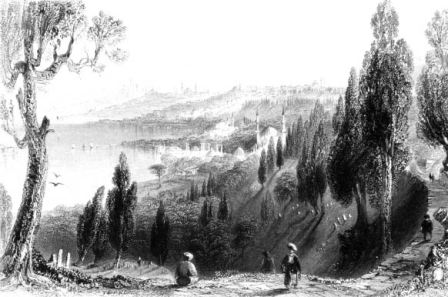

Hazret–i Hâlid’in türbesi, her zaman ve her mevsimde ziyaret edilirdi. Hatta kışın en şiddetli zamanlarında bile, bu mübarek zatın türbesine gelerek onun ruhaniyetinden medet bekleyenler eksik değildi. Bilhassa Arabî aylarının ilk Cuma günleri, her iki büyük avlu, adeta geçilmez bir hale gelirdi. Halk, daima onun ziyaretine tehalük gösterirdi (can atardı). Bilhassa cenazelere refakat edenler, türbe–i şerifi ziyaret etmeden geçmezlerdi. Ve bu ziyaretçiler sayesinde de, Eyüp’te sakin olan fakir halk, kendilerine daima bir geçim temin ederlerdi.
Bu münasebetle Eyüp’te bazı seyir ve toplantı yerleri de vücuda getirilmişti. Bunların en ehemmiyetlisi, türbeye civar sahilde, Bostan İskelesi idi.
Yine türbe civarında Sokullu Mehmet Paşa’nın kabrinin bulunduğu geniş bir bahçe vardır ki buraya da Türbe Bahçesi adı verilmişti.
Bunlardan başka, bir takım bostanlar da vardı, Bunlar, mevsimlerinde halka açılırdı. Uzak yerlerden türbeyi ziyarete gelenler, bu bostanlarda istirahat ederken yerler, içerler, yorgunluklarını çıkarırlardı.
Halk, şu seyir yerlerinden de hoşlanırdı:
Gümüşsuyu, Karyağdı, burada Karyağdı tekkesi adında Kadiri tarikatına mensup bir tekke vardı.
Şifa havuzu,
Topçularda, İncirlik,
Halk arasında Vezir tekkesi adıyla maruf olan Servi Mahallesi,
Dutluk…
Bu seyir yerlerinden birine de (Piyer Loti Tepesi) adı verilmişti. Ve bu tepe, o meşhur Fransız edîbinin bir romanı ile büyük bir şöhret iktisap etmişti (kazanmıştı).
Piyer Loti, bu romanına o kadar büyük bir hakikat süsü vermiş ki, onun bir hayal değil, tam bir hakikat olduğuna, –herkesten evvel– bizzat kendisi kanaat getirmişti.
Aziz okuyucularımızdan birçoklarının bildiği gibi (Piyer Loti) bir Fransız bahriye zabiti idi. Dünyanın birçok limanlarına gittiği gibi, günün birinde, gemisi ile İstanbul’a da gelmişti.
Bu zat garip bir hassasiyete malikti. Kadınları pek severdi. Mutlaka, uğradığı limanlarda, o liman halkının mensup olduğu milletten bir kızla evlenirdi. Ve bu evlilik hayatını tasvir etmek suretiyle de bir roman vücuda getirirdi. Mesela Japonya’ya gitmiş, orada (Madam Lao) isminde küçücük bir Japonla evlenmiş, o kızcağızla geçirdiği hayatı (Madam Krizantem) isminde bir romanda tasvir etmişti.
İşte, Madam Lao’nun zevci, günün birinde de gemisiyle İstanbul’a gelmişti. Burada –güya– çarçabuk Türkçe öğrenmiş, Müslüman kıyafetine girmiş, Azyade adında bir Türk kızıyla evlenmişti. Lâkin kızcağızın ömrü vefa etmemiş, kısa bir müddet sonra vefat etmişti.
Bu hayali romanın, burada bitmesi lâzım gelirdi. Hâlbuki eserlerine ehemmiyet verdirmek sanatına bihakkın vakıf olan Piyer Loti, pek genç yaşında vefat eden zevcesini Eyüp kabristanına naklettirmiş, şimdi Piyer Loti Tepesi denilen yere defnettirmişti. Ve kendisi de o tepedeki kahveye gelerek, Haliç’in latif manzarasını temaşa etmeyi iş, güç edinmişti.
Bu izdivaç ve bu mezar, tamamiyle bir hayal mahsulü olduğu halde Piyer Loti Efendi buna o kadar büyük bir hakikat çeşnisi vermişti ki, onun bu martavalını tasvir eden (Dezan Şante) adındaki romanı ile adı bile hiçbir mâna ifade etmeyen Merhum sevgilisinin hâlâ kabrini arayan birçok safdiller vardır.
İlkbaharda, Eyüp semtinin bütün seyir yerlerinde bir hazırlık yapılırdı. Ve bunlardan en evvel, Fulya bahçesi açılırdı. Bu bahçe, baharın ilk hediyesi olmak üzere İstanbul halkına nefis kokulu fulyalar yetiştirirdi. Ve yalnız Cuma günleri değil, haftanın sair günlerinde de, birçok halkın boş vakit geçirmesine imkân verirdi.
Türbe bahçesi, yalnız kadınlara tahsis edilmişti. Buraya erkekler giremezlerdi. Hatta uzak yerlerden gelmiş olan kadınlar burada çarşaflarını bile çıkararak başlarına birer örtü örterler: Bahçeyi işletenler tarafından kurulmuş olan salıncakta nöbetle kolan vurarak akşama kadar vakit geçirirlerdi.
Bu bahçesinin kapısında seyyar kebapçılar, helvacılar, simitçiler, şerbetçiler, her türlü yemişler, muhallebiciler, dondurmacılar ve diğer muhtelif satıcılar mürekkep olmak üzere adeta bir Pazar yeri kurulurdu. Büyük mikyasta alışveriş olurdu. Hatta bu sayede, Eyüp’ün fakir ayak satıcılarından birçokları zengin olmuştu.
Topçuların kiraz bahçeleriyle üzüm bağlarının oldukça ehemmiyetli bir şöhreti vardı. Oradaki hançerler ve bağlar da, Cuma günleri seyircilerle dolardı.
Şifa havuzu da, büyük bir ehemmiyete haizdi. Daimi bir rüzgâra maruz olduğu için havası hem serin ve hem de hatta temizdi. Suyunun her derde şifa olduğundan bahsedilen büyüdükçe havuzun civarındaki bahçelerde ve bağlarda, her mevsime mahsus meyvalarla, hususi bir kokuya malik olan yapıncak üzümleri yetiştirilirdi. Bu bağ ve bahçe sahipleri de bu sayede kendilerine mükemmel kazanç temin ederdi.
O civarda, eski bir köşkün harabesi vardı. Yerliler, bu köşke, İdris Köşkü derlerdi. Ve köşkün, meşhur İdris Bitlisiye ait olduğunu söylerlerdi.
Vaktiyle buradaki meydanda, pehlivan güreşleri yapılırdı. İstanbul’un en uzak, yerlerinden buraya, birçok güreş meraklıları toplanırdı.
Eyüp Çarşısı da büyük bir ehemmiyeti haizdi. İskeleden camiye kadar devam eden büyük cadde üzeri, kasabanın başlıca merkezini teşkil ederdi. Hazret–i Hâlid’in ruhaniyeti sayesinde, burada da birçok esnaf hizmetkârlar geçinirlerdi. 1293 senesinde İstanbul’da basılmış olan “Vasf–ı beyani der Eyüp Sultan” isminde küçük bir kitapta, Eyüp Çarşısı, şu suretle tasvir olunmaktadır,
Ziyaretçileri Eyüp İskelesinde karaya çıkarak iki tarafında kahveler ve dükkânlar bulunan caddeyi takip ederler ve bu yoldan cami ve türbe–i şerife giderler.
Bu caddenin iki tarafında kebapçı, kaymakçı, şekerci, tatlıcı, börekçi, şerbetçi, oyuncakçı, bakkal, kasap dükkânları vardır. Bunların aralarında da, muhtelif seyyar satıcılar gezip dolaşır. Bakkal dükkânlarında, gayet nefis taratorlarla, sardalya balığından salatalar yapılır.
Kebapçı ve kaymakçı dükkânları iki kapılı ve iki katlıdır. Alt katında erkek müşteriler otururlar. Kadınlar, ayrı bir kapıdan üst kata çıkarlar. Hatta çoluk çocuklarıyla ziyaretle gelen erkekler bile alt katta oturarak üst kata çıkan kadınlardan ayrı yemek yedikten sonra, hariçte tekrar buluşurlar.
Kaymakçı dükkânlarında, büyüklü küçüklü beyaz çanaklar içinde, Alibeyköyü’nde yapılmış olan yoğurtlar satılırdı. Bu yoğurtlar biraz tatlımsak olmakla beraber, ziyaretçiler tarafından adata kapışılır. Hatta bunlardan çanakları bir çıkına bağlıyarak alıp evlerine götürenler bile vardır.
Tatlıcı dükkânlarında satılan fındıklı, fıstıklı, bademli Antep Baklavalarıyla ince irmikten yapılmış olan revaniler, cidden lezizdi.
Börekçi dükkânlarındaki kırk kattan açılmış ince yufkadan mamul tepsi börekleriyle kol börekleri, ise yenilmekle doyulamıyacak derecede nefasete maliktir.
Bakkal dükkânlarının arkalarında küçük birer bahçeleri vardır. Buralara, tarator ve sardalya salatası yemeye gelen müşrikler için kerevetler koymuşlardır. Müşteriler bu kerevetlere oturarak yemeklerini yerler, sonra buradan çıkıp şerbetçi dükkânlarına giderek mevsimine göre yapılmış olan Vişne, Çilek, Nar, Demirhindi, Harub, Portakal vesair serinletici şerbetler içerler. Ve dondurmalar yerler.
Şekerci dükkânlarının camekânlarında, renk renk akideler, badem ezmeleri ve lokumlar sıralanmıştır. Lâkin çocuklar için de acayip şekillerde yapılmış ve kalınca çöplerin uçlarına takılmış olan horoz ve elma şekerleri de vardır.
Manavların dükkânları da başka bir alemdir. Gerek Eyüp’ün ve gerek Boğaziçi’nin bağ ve bahçelerinin en güzel mahsullerini bu dükkânlara getirirler. Ve müşterilerin iştahlarını kabartmak için, göz alıcı bir tarzdan teşhir ederlerdi.
Bu manavlarda bulunmıyan meyva yoktur. Bursa’nın meşhur hülü şeftalilerden tutunuz da, Amasya’nın kıpkırmızı elmalarına, Malatya’nın altın sarısı kayısılarına, Ankara’nın içi bal gibi su dolu Armutlarına, Çamlıca’nın ve Eyüp Sultan’ın Topçu bağlarından getirilmiş olan dürâni kirazlarına, Halebin meşhur lüfan narlarına, bıçağı vurur vurmaz çatır çatır ayrılan Tekirdağ karpuzlarına, Uzun köprünün mis gibi kokan topatan kavunlarına, hatta Mekke’den getirilmiş olan şifalı hurmalara kadar her ne meyve aranırsa bulunurdu.
Lâkin ziyaretçiler tarafından, en ziyade, Eyüp bağ ve bahçelerinde yetişen yarısı kırmızı yarısı beyaz can erikleriyle, yakut rengindeki mürdüm erikleriyle çavuş, misket ve kınalı yapıncak üzümlerine fazlaca rağbet olunurdu.
Seyyar satıcıların ekserisi, helvacı Arnavutlardır. Bunların bir kısmı kâğıt ve susam helvası, bir kısmı da koz helvası satarlardı. Kâğıt helvası satan Arnavutlar, daima dondurmacı dükkânlarının önlerinde ve civarında dolaşırlardı. Çünkü bazı müşteriler, dondurmaları kâğıt helvalarının ortasına yerleştirip yemekten hoşlanırlardı.
Dondurmacı ve şerbetçi dükkânlarında satılan şerbet şişelerinin de bir hususiyeti vardı. Bunlar bir buçuk arşın uzunluğunda bir tokmağı andırırdı. Asıl şişe tarafı bir bardak kadar şerbet alan bir yuvarlaktı. Diğer tarafı ise ince ve uzun bir saptır. Bunlar, bilhassa çocuklar için yapılırdı. Bunların uzun saplarını ağızlarına alarak içindeki şerbeti yudum yudum içmek çocuklar için büyük bir zevk sayılırdı.
Oyuncakçı dükkânlarının önlerinden, çocuklar kolay kolay geçmezlerdi. Analarına, babalarına, mutlaka oradaki oyuncaklardan bir şeyler aldırmak isterlerdi. Bu oyuncaklar, gayet basit ve iptidaidir.
Üzerleri, rengârenk boyalı, beşikler, davullar, defler, fırıldaklar, göbekleri aynalı testiler, üzerlerinde tavuk ve horoz tüyleri bulunan hacıyatmazlar, çok çirkin ve kulakları tırmalayan sesler çıkaran kaynana zırıltılarından ibaretti. Fakat bunların hepsi de, ilk bakışta çocukların arzu ve heveslerini celp ve cezp edecek şekillerde imal edilirdi. Bilhassa Ramazan yaklaştığı vakit, ziyarete getirilen erkek çocuklara buradan bir davul alarak derhal ipini onun boynuna takmak, çok eski adetlerdendi.
Cami ve türbe–i şerifin avlusunda her Cuma günü kurulan sergiler de dikkate şayandır. Bu sergilerin camekânlarında, otuzüçlükten doksan dokuzluğa kadar iri taneli kehribarlardan tutunuzdan armudi, yuvarlak, nakesam, öd, pelesenk, kuka, tırnak, bağa, sedef, mercan taklidi kırmızı balmumu, süttaşı ve hatta adi ağaçtan tespihler vardır.
Bazı tespihçiler, rengârenk ve çeşit çeşit tespihlerin altına kehribar başlıklar, budaklı, parçalı, yekpare, şişhaneli kakmalı, tel işlemeli, burmalı, yasemen, kiraz, abanoz, güz ağacı vesaireden yapılmış olan sigara ağızlıkları ve kırmızı lüleri yaldızlı kısa çubukları sıralardı.
Bunlardan başka bu sergilerden Kur’an–ı Kerim Enam–ı Şerif, Delal–i Hayrat, Mızraklı İlmihal vesaire gibi din kitaplarıyla Mekke, Medine ve Kâbe gibi mukaddes beldelere ait resimlerle eski hattatların yazılarından kopye edilmiş levhalar satan esnaflar da vardı. Bunlar, cenazelerle gelen cemaatlere veyahut Cuma günleri her iki avluya hınca hınç dolduran ziyaretçilere mallarını satarak bir hayli para kazanırlardı.
Eyüp kasabası, meşrutiyetin ilanına kadar alelade bir köy gibi idare edilmişti. Ancak meşrutiyetin ilanından sonra İstanbul’da yeniden yapılan teşkilat esnasında, İstanbul vilayetinin kazaları arasına girdi. Ve ilk defa olarak bir Belediye teşkilatı vücuda getirildi.
O zaman kadar mahalle ihtiyar heyetleri tarafından görülen içtimai işler, bu suretle Belediyeye devir edildi. Bu suretle Eyüp bir kat daha ehemmiyet kesbetti.
